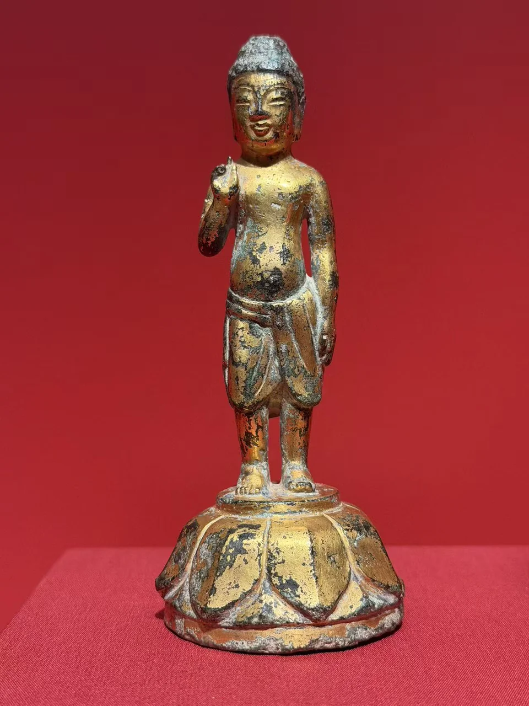
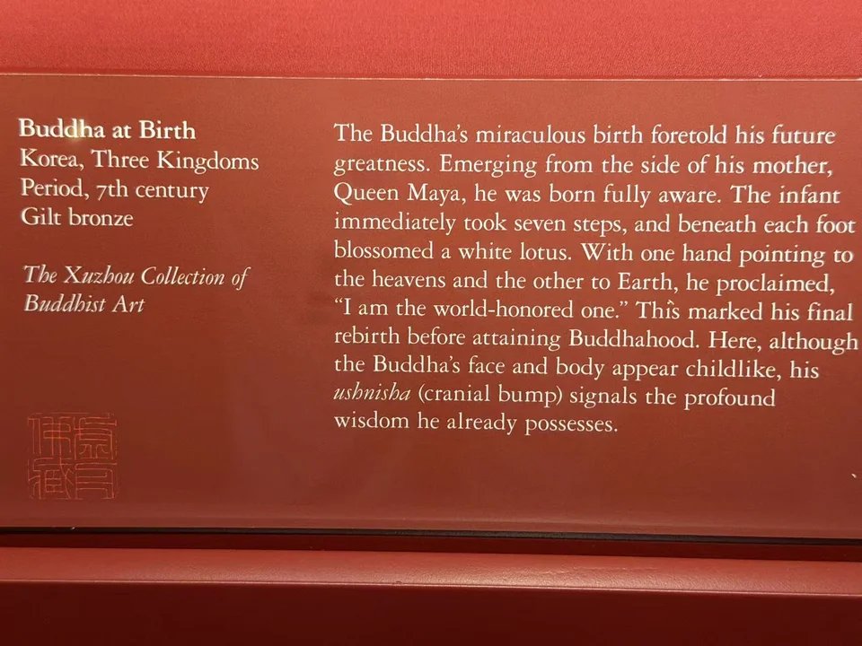

THE XUZHOU COLLECTION
诞生佛
Buddha at Birth
童子形体与莲座，指向佛陀诞生的故事。

- 地区
- 朝鲜半岛
- 年代
- 三国时期，7世纪
- 材料
- 鎏金青铜
- 收藏
- 虚舟收藏（私人收藏）
- 观看地点
- 休斯顿美术馆（MFAH）
- 尺寸
- 12.1 × 4.4 × 3.8厘米（据收藏图录Cat.23）
作品札记
这尊小像只有十二厘米高，站在宽大的覆莲座上。残留的金色沿面部、胸腹和双腿分布，腰间的衣饰向两侧垂落。右臂屈肘，前臂抬向肩前，左臂垂下，一手指天、一手指地。照片中双臂轮廓仍在，手指有局部损伤。
圆润的胸腹和面容带着孩童感，头顶却已有肉髻，双耳也被拉长。收藏图录将这些特征联系到未来成佛的预示：这里表现的不只是一个新生婴儿，也是已显露佛陀相好的诞生形象。图录称眉间白毫已磨蚀，不能将它当作现场照片中仍清楚可见的细节。
《Approaching the Buddha: Transmission and Transformation》（2026），Cat.23，p.98 ↗
指天的动作并没有把整条手臂高高伸直，而是以抬起前臂完成，显得舒缓。图录注意到身体轻微的S形曲线，以及左足略向前、向外的姿势；作者还指出，从背后看，臀部有轻微倾斜。这一背面细节依据图录记载。重心的小幅变化，让小像在站定之中仍像有下一步，也使宣示身份的姿态保留了一点孩童感。
《Approaching the Buddha: Transmission and Transformation》（2026），Cat.23，p.98 ↗
在灌沐中相遇
浴佛时，诞生佛置于盆中，参与者以清水或香水灌沐，将佛诞传说中的沐浴转化为可以亲身参与的仪式。小像不仅供人远观，也借由一次次灌沐，与信众建立联系。图录作者认为，这尊像各面都受到重视，可能与人们围绕水盆、轮流灌沐的观看方式有关。这是对造型与仪式关系的解释，尚不能确定本像曾在何处、以何种方式使用。
《Approaching the Buddha: Transmission and Transformation》（2026），Cat.23，p.98 ↗ · 飞鸟资料馆：1978年诞生佛专题（浴佛仪式） ↗
“天上天下，唯我独尊”若只读前一句，容易被理解为自我夸耀。《韩国民族文化大百科全书》“诞生佛”条目引用的传说，还接着说“三界皆苦，我当安之”。这里的宣言也关乎救苦：新生的佛陀承诺回应众生的苦难。不同叙述的措辞未必相同，这里采用的是该条目所引的表述。
比较阅读：另一种指天的姿态
弗利尔收藏的日本飞鸟时代诞生佛，同样作于7世纪，藏品号F2005.9a-b，连底座通高约11.7厘米。官方正面照片中，右臂形成一道向上的弧线，手举过头顶，腰身较收束，裙褶呈细密的垂线；虚舟这尊的抬手停在肩前，腹部较圆，衣饰向两侧分开。同一题材可以有不同的身体节奏。弗利尔馆方注明其底座后配。
弗利尔馆藏书目也列出2003年《Transmitting the Forms of Divinity: Early Buddhist Art from Korea and Japan》，Cat.25，pp.240–241，与虚舟图录研究摘要中的注释相合。这里只比较姿态，不由相似处推定同一工坊或具体传播路线；2003年图录原页尚未核读。
书目与资料说明
Hao Sheng著，多位学者参与撰写，《Approaching the Buddha: Transmission and Transformation》，休斯顿美术馆出版、耶鲁大学出版社发行，2026年，128页，ISBN 9780300286427。本件为Cat.23，p.98；尺寸与条目解读依据藏家提供的图录页面整理，出版信息另据出版社官网核对。
地区、时期与材质沿用现场展签：朝鲜半岛，三国时期，7世纪，鎏金青铜。现有资料不足以进一步指定高句丽、百济或新罗，也尚未确认出土地、原寺院、原配浴盆、拍卖记录及完整递藏经历。1978年专题仅用于了解仪式背景，不采用其中的存世数量作为今日统计。
《Approaching the Buddha: Transmission and Transformation》（2026），Cat.23，p.98 ↗
现场展签与原始记录

- 题名
- Buddha at Birth
- 地区
- Korea
- 年代
- Three Kingdoms period, 7th century
- 材料
- Gilt bronze